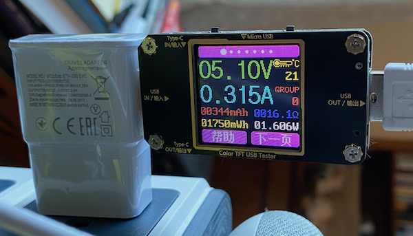

2.3. First Order Model for a Single Heater#

2.3.1. Learning Goals#
Mathematical modeling is an integral part of process control. Process models come in many forms for different purposes, ranging from the barest of information about a process to sophisticated simulation involving millions of computational nodes.
Our purpose here is to demonstrate simple approaches that provide with insight about the qualitative nature of process dynamics. We show how to construct simple models from first-principles understanding of the processes, and how to fit those models to experimental data.
In this notebook we:
Construct a first-order lumped model for a single heater/sensor assembly on the Temperature Control Laboratory
Relate this model to the previously enountered first-order linear systems
Demonstrate how to estimate parameters from step test experiments.
2.3.2. First-order model for a single heater/sensor assembly#
2.3.2.1. Energy Balance#
We’ll be begin by developing a model for one of the heater/sensor assemblies located on the Temperature Control Laboratory. The basic outline of an energy balaance is given by
In the absence of material flows, kinetic or potential energy, or chemical changes, the changes in sensible temperature is the only form of energy accumulation. If we assume the whole heater/sensor assembly is at uniform temperature \(T_1\), with mass \(m\), and a constant and average specific heat capacity \(\hat{C}_p\),
For the purposes of this model we will lump the mass and specific heat capacity into a single parameter representing the overall heat capacity of the assembly
The final expression for the rate of energy accumulation becomes
Study Question
What are the units of \(C_p\)?
2.3.2.2. Energy inflow#
The flow of energy into into the heater/sensor assembly is controlled by variable \(u_1\), the percentage of maximum available power to the heater. As a safety feature to protect both the user and the equipment, the maximum power available to the heater is implemented on the Arduino with a parameter \(P_1\) specified as an 8 bit integer value between 0 and 255. The actual power delivered to the heater is proportional to the product \(P_1 u_1\)
where
A parameter \(\alpha\) is needed to model the experimentally observed power delivered to the heaters in units of watts.
Study Question
What are the units of \(\alpha\), \(P_1\), and \(U_1\)?
Study Question
How would you determine \(\alpha\) experimentally? What equipment would you need in addition to that delivered with the Temperature Control Lab?
2.3.2.3. Energy outflow#
Energy flows out of the assembly primarily through convective heat transfer to the surrounding environment. At the relatively low operating temperatures of the device, the amount of radiative heat transfer is neglible.
Parameters \(U_a\) and \(T_{amb}\) are the overall heat transfer coefficient and ambient temperature, respectively.
Study Question
Do you agree with the assumptions embedded in this equation? What other considerations might apply?
Study Question
What are the units of \(U_a\)?
Study Question
How can you determine \(T_{amb}\) in experiments you do with the Temperature Control Lab?
2.3.2.4. Unsteady State Model#
Putting these terms together in the energy balance yields a first-order model for the response of the heater/sensor assembly on the Temperature Control Laboratory.
2.3.2.5. Steady State Model#
At steady-state
which gives an equation for the steady state temperature \(\bar{T}_1\) as a function the steady state input \(\bar{u}_1\).
2.3.3. Estimating \(\alpha\)#
The parameter \(\alpha\) exhibits a mild temperature dependency due to the intrinisic properties of semiconductors. The following experiment sets to P1 to a value of 200 in the arbitrary units of the Arduino hardware, then sets U1 to 50%. The power delivered to the device is measured after reaching operating temperature.
import pandas as pd
t_expt = 600
data_file = "data/Model_Data.csv"
connected = False
if connected:
# run experiment and record data locally
from tclab import TCLab, clock, Historian, Plotter
with TCLab() as lab:
h = Historian(lab.sources)
p = Plotter(h, t_expt)
lab.P1 = 200
lab.U1 = 50
for t in clock(t_expt, 10):
print(t, lab.T1)
p.update(t)
h.to_csv(data_file)
else:
# download previously recorded data from repository
df = pd.read_csv("https://jckantor.github.io/cbe30338-2021/" + data_file)
ax = df.plot("Time", figsize=(10, 5))
ax.grid(True)
ax.set_title(f"Peak Temperature = {df['T1'].max()}")

Under these conditions, starting with an ambient temperature of 21 C, when the system reached steady-state the measured voltage was 5.10 volts with a current of 0.315 amps, or 1.61 watts, resulting in a peak temperature of 53 C
Study Question
What is the maximum power that could be delivered to the heater/sensor assembly?
2.3.4. Modeling Deviations from Steady State#
2.3.4.1. Steady State#
We’ll begin our analysis by investigating the steady-state response of this system to a steady-state input \(\bar{u}_{1}\). At steady-state all variables are constant so \(\frac{dT_1}{dt} = 0\), which leaves
Solving for \(\bar{T}_{1}\)
Study Question
In the cell below, write Python code to estimate the value of \(U_a\).
Study Question
Using the results of this calculation, estimate the maximum acheivable temperature with this device.
2.3.4.2. Deviation Variables#
In examining the response of the temperature control laboratory, we see the temperature is a deviation from ambient temperature, i.e.,
For process control purposes, we are often interested in the deviation of a process variable from a nominal value. In this case the choice of deviation variable is clearly obvious which is designated \(T_1'\). From the steady state equation we see
which is a somewhat simpler expression.
Let’s see what happens to the transient model. Substituting \(T_1 = T_{amb} + T_1'\) into the differential equation gives
Expanding these terms
we see several terms drop out. The derivative of any constant is zero, and see a cancelation on the right hand side, leaving
One last manipulation will bring this model into a commonly used standard form
Study Question
Previously we estimated \(U_a\) and \(\alpha\) from steady-state measurements. Can \(C_p\) be estimated from steady-state measurements? Why or why not?
2.3.4.3. First Order Linear Differential Equations#
A standard form for a single differential equation is
where \(a\) and \(b\) are model constants, \(x\) is the dependent variable, and \(u\) is an exogeneous input.
2.3.4.3.1. Steady State Response#
For a constant value \(\bar{u}\), the steady state response \(\bar{x}\) is given by solution to the equation
which is
2.3.4.3.2. Transient Response#
The transient response is given by
which is an exact, analytical solution.
2.3.4.3.3. Apply to Model Equation#
We now apply this textbook solution to the model equation. Comparing equations, we make the following identifications
Substituting these terms into the standard solution we confirm the steady-state solution found above, and provides a solution for the transient response of the deviation variables.
2.3.4.4. Plotting the Analytical Solution#
The following cell demonstrates use of these results to plot the transient response for a particular choice of model parameters.
The steady state analysis provided an estimate for the gross heat transfer coefficient \(U_a\). Rerun this cell for different values of gross heat capacity \(C_p\). Try to find a value that at least mimics the experimental response shown above.
%matplotlib inline
import numpy as np
import matplotlib.pyplot as plt
# parameter values and units
alpha = 0.00016 # watts / (units P1 * percent U1)
P1 = 200 # P1 units
Ua = 0.05 # watts/deg C
Cp = 6 # joules/deg C
U1 = 50 # steady state value of u1 (percent)
T_amb = 21 # deg C
# initial conditions
T1_dev_initial = 0
# steady state solution
T1_dev_ss = alpha*P1*U1/Ua
# compute the transient solution
t = np.linspace(0, 600)
T1_dev = T1_dev_ss + (T1_dev_initial - T1_dev_ss)*np.exp(-Ua*t/Cp)
# plot
fig, ax = plt.subplots(1, 1)
ax.plot(t, T1_dev + T_amb)
ax.set_xlabel('time / seconds')
ax.set_ylabel('temperature / °C')
ax.grid(True)